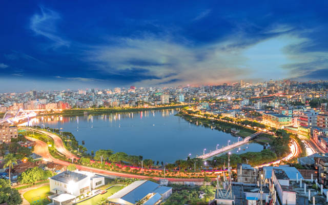
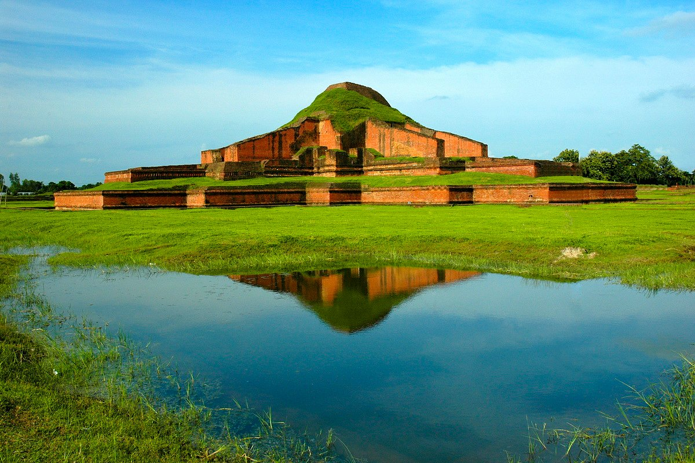
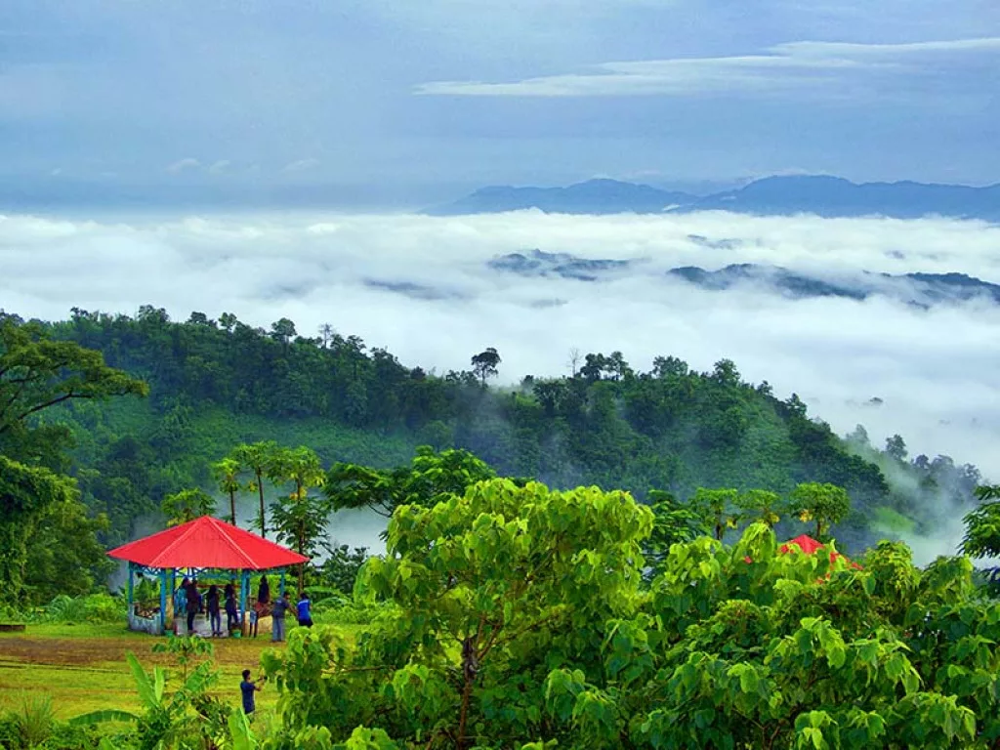
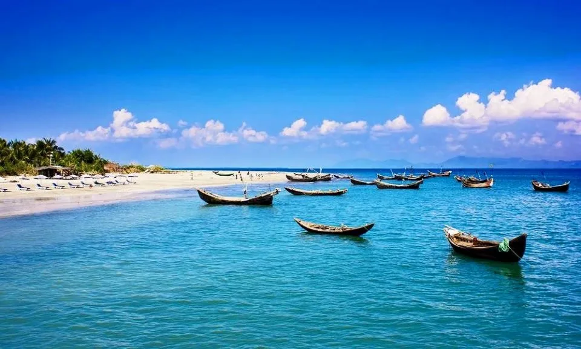

Bangladesh is a South Asian country bordered by India on three sides and the Bay of Bengal to the south. It shares a short border with Myanmar in the southeast.
With a population exceeding 170 million, it is one of the most densely populated countries in the world.
The capital, Dhaka, is a bustling megacity known for its vibrant culture and rapid urbanization.

Bangladesh gained independence from Pakistan in 1971 following a brutal liberation war.
Since then, it has developed into a nation with a growing economy, driven by industries such as textiles, agriculture, and remittances from overseas workers.
The country is also highly vulnerable to the effects of climate change due to its low-lying geography and frequent natural disasters like floods and cyclones.

The country has a rich cultural heritage, deeply rooted in its Bengali language, literature, and traditions.
Bengali, the official language, is celebrated worldwide through events like International Mother Language Day.
Bangladesh is also famous for its lush greenery, rivers, and the Sundarbans, the world's largest mangrove forest and home to the endangered Bengal tiger.

Despite challenges, Bangladesh has made significant strides in areas like education, health, and economic development, aiming for sustainable growth and improved living standards for its people.

Why Bangladesh?
Bangladesh offers a unique blend of natural beauty, rich culture, and history.
Explore the Sundarbans, home to Bengal tigers, visit ancient archaeological sites, or experience the vibrant streets of Dhaka.
With its welcoming people and affordable travel, Bangladesh is an off-the-beaten-path destination worth discovering.